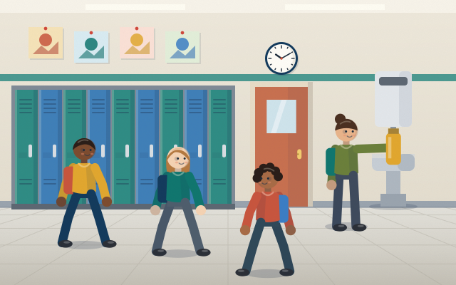

A guided journey through
The Language Page English for school, in your language, K–8.
thelanguagepage.com · practice in listening, speaking, reading and writing
Press → or Space to begin
Why it exists
Three people. One shared problem.
Aa ñ é The learner
Is learning English for school while learning the school subjects themselves.
? The teacher
Has little time to differentiate, and can rarely tell if a task was done alone or with support.
Hello Hola The family
Speaks another language at home and has few ways to take part in school English.
From the project’s own logic model. It states what the product is built to do; it is not evidence of impact.
Open live ↗
The front page
One page, with a door for each person.
thelanguagepage.com/access-practice-lab/
What is inside
933 activities, four language domains, five grade bands.
Tap a domain to see where its activities sit. The core bank grows with the grade bands it serves.
Counted from the activity bank (access-practice-lab/content), 24 November 2026.
Open live ↗
The core idea
Supports fade. The task stays the same.
More support Some support On my own
The hallway gets crowded between classes. Explain one change the school could make so students get to class safely, and give a reason.
One change the school could make is
crowded safely walk on the right bump into because for example
The learner speaks or writes here, with the same prompt at every level.
What the record says
Supported Used a sentence frame and a word bank.
Work done on my own is recorded as independent. Work done with frames, a word bank or a model is recorded as supported, never as independent.
The teacher sees supports and independence as counts, so the next small group is easy to choose.
Open live ↗
Speaking pathway · The Busy Hallway, grades 6–8
One picture. Speak three times, saying more.

Original art from the site’s picture library
Open live ↗
Writing pathway · Language Upgrade Lab
Make a plain sentence say exactly what you mean.
Phones in class are bad .
Revise this for an opinion essay to the school board. Frame: Phones in class can be ___ because ___.
Your revision (anyone in the room can type here)
Check my work Try a weak revision Try a strong revision
· New information added
· A precise word, the general one gone
· Two ideas joined by a connector
Press Check my work . The feedback names one thing to fix and asks a question. It never gives the answer.
This is the site’s real checker. It looks for patterns; it does not judge meaning or give a score.
Open live ↗
Featured lesson · Safer Hallways: Speak, Write, Improve
Ten minutes: speak first, then write, then improve.
10:00
Play the lesson in 20 seconds Run a live 10-minute clock
First draft The school should make the hallway bigger. It is too crowded.
After one cue: “Add an example that starts with For example.” One change the school could make is to put arrows on the floor so everyone walks the same way. This would help because students would not run into each other. For example, a student with a heavy backpack could get to class without being pushed.
Places to practice
A library of places to practice, each with one clear job.
Open live ↗
Evidence from a learner’s own work
A passport of finished practice.
My Passport · grades 6–8
Listening
Speaking
Reading
Writing
Passport The Language Page
✓ Stamps show how much a learner practised, saved on their own device.
↗ A Growth Map shows what writing, speaking and missions reveal, and suggests next steps.
✉ A one-page letter for home in English, Spanish or both, with no level and no score.
Stamps are not an ACCESS score or a WIDA level.
Open live ↗
For teachers
Find it, teach it, then read the evidence.
thelanguagepage.com/access-teacher/
thelanguagepage.com/access-teacher/predictive/?demo=1
Teacher Hub. Find an activity, plan a lesson, run a class and review student work. No password on this site.
WIDA Data Studio. Teachers type in official results; the analysis runs in the browser. Sample mode uses 12 fictional students.
Earlier results 2025–26 and later
No growth number across the reset
Open live ↗
For families
Families take part in English or Spanish.
Family Tour · Step 1 of 4
Welcome! Let’s Practice English Together Choose what to practice and your child’s grade.
You do not need perfect English to help. Ask, wait and listen. You can talk in your home language, too.
Tap the card to switch language
Recorrido familiar · Paso 1 de 4
¡Bienvenidos! Practiquemos inglés juntos Elijan qué practicar y el grado de su hijo o hija.
No necesitan hablar inglés perfecto para ayudar. Pregunten, esperen y escuchen. También pueden hablar en el idioma de su casa.
Toquen la tarjeta para cambiar de idioma
thelanguagepage.com/access-practice-lab/family-tour/
No account for families either. Practice itself stays in English; directions and the family pages offer Spanish.
The Spanish is machine-drafted until a bilingual reviewer signs it off.
Open live ↗
Privacy
Progress stays on the learner’s own device.
Aa
✓ ✎ ● stamps · drafts · recordings
ads trackers teacher
1 No account is needed to practice.
2 No ads. No third-party analytics or trackers.
3 A recording leaves the device only when the learner chooses to send it.
Send one recording to the teacher
Checked on the live site: a network test of 79 pages passed on 25 November 2026.
By the numbers
Built, counted and checked.
Measured from the repository on 24–25 November 2026. Counts of content, not results.
Honest road ahead
What is not finished yet.
From the project’s own program record. None of these is claimed as done on the site.
Your turn
Where do your students need to speak or write more?
thelanguagepage.com/access-practice-lab/start
No account to practice Nothing is scored Saves on this device English and Spanish help
Original practice, not an official WIDA assessment; no scores or placement.
Scan to start